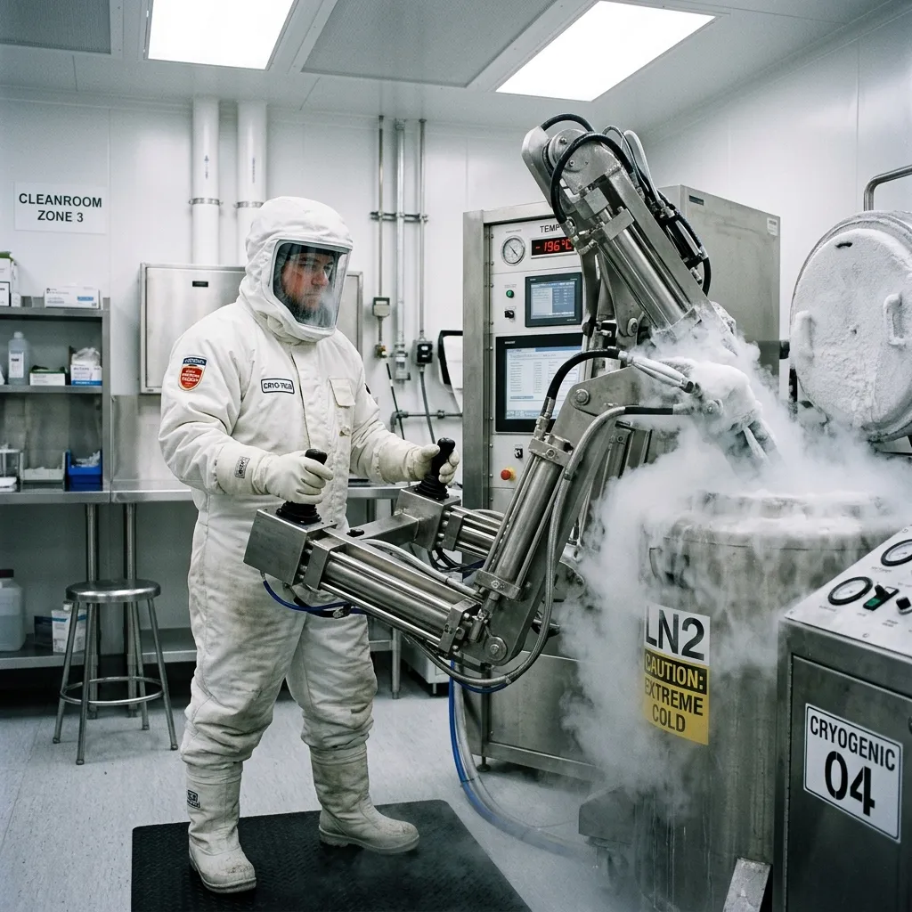

Compressing ambient atmospheric air into industrial-scale volumes of liquid nitrogen requires immense, sustained electrical input. Standard urban grids cannot support this constant, massive energy draw without relying on unstable fossil fuels or risking catastrophic power fluctuations. Iceland is structurally the only viable global location for the Cryotex operation due to its isolated, robust geothermal infrastructure. The facility draws directly from a subterranean volcanic energy grid, guaranteeing an uninterrupted, completely carbon-neutral power supply. This constant, high-capacity electricity generation allows our mechanical compressors to run endlessly, liquefying the necessary nitrogen required to flood our extraction chambers. The geothermal matrix entirely removes our reliance on external supply chains for vital cryogenic coolants, ensuring our vitrification process remains an absolute closed-loop system entirely decoupled from conventional power limitations.
The Reykjavik Lab
Operating entirely from a retrofitted, geothermally powered data centre in Reykjavik, Iceland, Cryotex Isolates represents the absolute pinnacle of secure, controlled environmental processing. By converting the facility's extensive legacy cooling infrastructure into our liquid nitrogen production and extraction grid, we achieve maximum thermal efficiency. This isolated location provides an uncompromising, constant climate necessary for processing the world's most delicate, volatile botanical compounds without any threat of environmental degradation.

Geothermal Energy Matrix
ISO 6 Cleanroom Specifications
The milling phase demands a completely sterile processing environment to prevent the introduction of foreign biological contaminants into the pure botanical isolates. Our Reykjavik facility operates a continuous ISO 6 standard cleanroom, ensuring absolute bio-security throughout every stage of production. Access is strictly controlled via multiple positive-pressure airlocks, which forcibly repel ambient dust and airborne pathogens. All human technicians are required to wear full-body, non-shedding Tyvek suits equipped with independent respiration systems to prevent moisture exhalation from affecting the vitrified matter. The entire atmospheric volume of the milling sector is continuously cycled through industrial HEPA filtration systems, maintaining a particulate-free environment. This uncompromising standard eliminates any potential for cross-contamination, guaranteeing that each batch of extracted isolate remains completely pristine and chemically identical to the raw source material.
Liquid Nitrogen Handling
The physical manipulation of liquid nitrogen demands a highly regulated approach to mitigate extreme hazard. The ambient environment within the extraction chamber is actively monitored by ultra-sensitive oxygen-depletion sensors, alerting technicians to any atmospheric displacement caused by rapidly expanding nitrogen gas. To ensure absolute safety, the direct handling of the -196°C Dewar flasks is executed entirely by automated mechanical steel arms, programmed for millimetre precision. When manual intervention is strictly necessary, technicians deploy specialised cryogenic personal protective equipment, including reinforced thermal face shields and insulating gauntlets. These strict safety protocols eliminate the catastrophic risks associated with extreme cold exposure, allowing us to maintain the exacting thermodynamic control required to process our botanical compounds without compromising personnel or the sterile extraction environment.
See Supply Logistics